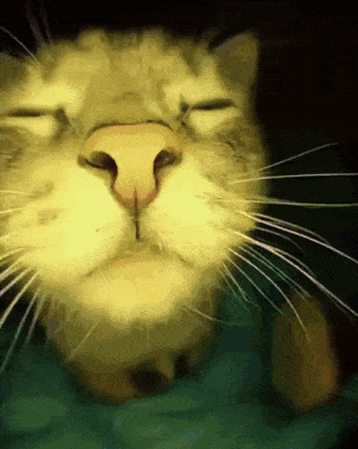
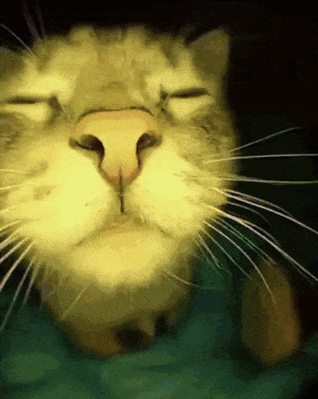

Кіт, який друкує на клавіатурі
Цей кіт став відомим у мережі завдяки своєму ентузіазму до роботи за комп’ютером.

Цьому коту подобається танцювати

Цей кіт став відомим у мережі завдяки своєму ентузіазму до роботи за комп’ютером.
